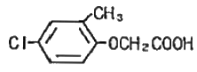
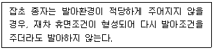

식물보호산업기사 (2008-09-07 기출문제)
1과목: 식물병리학
1. 오늘날 세계 3대 수목병에 속하지 않는 것은?
- 소나무류 리지나뿌리썩음병
- 밤나무 줄기마름병
- 느릅나무 시들음병
- 잣나무 털녹병
(정답률: 70%)

2. 잎도열병의 발생은 다음 조건 중 어떤 때 많아지는가?
- 가용태질소의 함량이 많을 때
- 가용태질소에 대한 규산의 함량비가 많을 때
- 가용태질소의 함량이 적을 때
- 3요소 비료를 골고루 주었을 때
(정답률: 89%)
3. 다음 중 우리나라에서 가장 오래된 식물병에 관한 문헌은?
- 행포지(杏浦志)
- 임원십육지(林園十六志)
- 유산잡설(裕山雜說)
- 조선작물병해목록(朝鮮作物病害目錄)
(정답률: 71%)
4. 죽은 식물체에 증식하지 않는 식물 병원균은?
- 점균(끈적균)
- 진균
- 세균
- 바이러스
(정답률: 92%)
5. 침입저항성과 가장 관련이 있는 사항은?
- 두꺼운 각피
- 과민성 반응
- 파이토알렉신(phytoalexin)의 분비
- 페놀(phenol)물질의 집적
(정답률: 75%)
6. 생물학적 병원(病原)이 아닌 것은?
- 균류
- 세균
- 선충
- 고온
(정답률: 94%)
7. 다음 중 바이러스병 진단에 이용되는 지표식물이 아닌 것은?
- 천일홍
- 명아주
- 쇠비름
- 담배(N. glutinosa)
(정답률: 50%)
8. 아직까지 밝혀지지 않은 병은 진단할 때 쓰는 방법은?
- 머피의 법칙
- 코흐의 법칙
- 최소량의 법칙
- 유전자 대 유전자설
(정답률: 90%)
9. 감자 역병 발병의 최적환경은?
- 기온이 30℃ 내외이고 다습한 곳
- 기온이 20℃ 내외이고 건조한 곳
- 기온이 20℃ 내외이고 습기가 많은 냉량한 곳
- 기온이 30℃ 내외이고 건조한 곳
(정답률: 70%)
10. 식물병을 유발하는 선충의 이동에 대한 설명으로 틀린 것은?
- 소나무 재선충은 토양에 존재하는 경우가 드물다.
- 일반적으로 한 생육기 동안 몇 미터 밖에 이동하지 못한다.
- 기주식물의 줄기나 잎 표면을 자력으로 올라가기도 한다.
- 토양공극이 얇은 수막으로 되어있을 때보다 물로 가득차 있을 때 더 빨리 이동한다.
(정답률: 67%)
11. 수박 탄저병의 특징적인 병징은?
- 움푹 들어간 흑갈색의 원형 병반위에 담홍색의 점질물이 분비된다.
- 엽액에 한정된 다각형의 병반이 생긴다.
- 비온 후 날씨가 습하면 병환부에 솜같은 곰팡이가 발생한다.
- 열매를 잘라보면 내부가 완전히 상하여 썩어있고 악취가 난다.
(정답률: 70%)
12. 병원균이 세균(細菌)인 것은?
- 벼 깨씨무늬병
- 포도 탄저병(만부병)
- 토마투 풋마름병
- 감자 역병
(정답률: 77%)
13. 병원균이 주로 종자전염하는 병은?
- 보리 겉깜부기병
- 보리 흰가루병
- 밀 줄기녹병
- 배추 노균병
(정답률: 84%)
14. 식물병의 진단방법 중 면역학적 진단방법에 속하지 않는 것은?
- 응집과 침강반응
- 면역확산법
- ELISA법
- 현미경관찰법
(정답률: 79%)
15. 하우스내 재배 작물에 병이 많이 발생하는 가장 주요한 이유는?
- 높은 온도
- 높은 습도
- 강한 광선
- 낮은 온도
(정답률: 89%)
16. 다음 중 식물병의 발병에 관여하는 3대 요인과 가장 거리가 먼 것은?
- 병원체의 밀도
- 야생동물의 가해
- 기주식물의 감수성
- 연작
(정답률: 78%)
17. 균핵을 형성하지 않는 것은?
- 채소류 균핵병
- 과수의 흰가루병
- 흰비단병
- 벼 잎집무늬마름병
(정답률: 40%)
18. 비료성분이 부족한 논에서 발생하기 쉬운 벼의 병해는?
- 도열병
- 키다리병
- 깨씨무늬병
- 흰잎마름병
(정답률: 58%)
19. 해당하는 식물병의 방제법으로 거리가 먼 것은?
- 배나무 붉은별무늬병 – 배나무와 향나무의 거리를 1.5km 이상 격리시킨다.
- 벼 도열병 – 찬물을 직접 논에 넣지 않고, 얕게 대되 마르지 않게 한다.
- 배추 무사마귀병 – 토양을 pH 5.0 이하의 산성으로 유지한다.
- 포도나무 노균병 – 보호살균제와 침투성살균제를 살포한다.
(정답률: 85%)
20. 주로 물에 의해서 전파되는 벼의 병은?
- 키다리병
- 도열병
- 흰잎마름병
- 오갈병
(정답률: 79%)
2과목: 농림해충학
21. 곤충의 외분비물질로 특히 개척자가 새로운 기주를 찾았다고 동족을 불러들이는데 사용되는 종내 통신물질로 나무좀류에서 발달되어있는 물질은?
- 집합페로몬
- 경보페로몬
- 길잡이페로몬
- 성페로몬
(정답률: 73%)
22. 파리목에 속하는 곤충은 날개가 어느 부분에 부착되어 있는가?
- 앞가슴
- 가운데가슴
- 뒷가슴
- 복부 제 1마디
(정답률: 86%)
23. 성충으로 월동하는 해충은?
- 왕무당벌레붙이
- 혹명나방
- 검거세미나방
- 복숭아혹진딧물
(정답률: 59%)
24. 수도(벼)해충이 아닌 것은?
- 이화명나방
- 끝동매미충
- 거세미나방
- 혹명나방
(정답률: 69%)
25. 일반적으로 곤충의 발육 적산온도법칙과 가장 관계가 먼 것은?
- 발육속도
- 유효적산온도
- 발생예찰
- 최적발육온도
(정답률: 43%)
26. 소화계에 대한 설명으로 옳은 것은?
- 중장(中腸)은 기계적 소화를 하는 곳이다.
- 소화흡수작용은 후장(後腸)에서만 일어난다.
- 말피기관은 배설기관이다.
- 전장(前腸)에는 많은 선세포(腺檅胞)가 발달되어 있다.
(정답률: 73%)
27. 이화명나방의 월동에 대한 설명으로 옳은 것은?
- 볏짚이나 그루터기 속에서 번데기로 월동한다.
- 볏짚이나 잡초에서 알로 월동한다.
- 볏짚이나 그루터기 속에서 유충으로 월동한다.
- 잡초에서 성충으로 월동한다.
(정답률: 84%)
28. 곤충의 피부 중 제일 바깥층에 속하는 것은?
- 진피층(epidermis layer)
- 표피소층(cuticulin layer)
- 외원표피(exocuticle)
- 시멘트층(cement layer)
(정답률: 71%)
29. 해충 발생예찰의 가장 궁극적인 목적은?
- 발생시기 결정
- 발생량 조사
- 피해량 조사
- 방제실시 여부
(정답률: 75%)
30. 소나무재선충병을 옮기는 매개충의 몸속으로 재선충이 이동하는 시기는?
- 솔수염하늘소의 우화기
- 솔수염하늘소의 번데기
- 솔수염하늘소의 유충기
- 솔수염하늘소의 난기(卵期)
(정답률: 36%)
31. 총채벌레목의 특징이 아닌 것은?
- 날개 둘레를 따라 긴 가털이 나 있다.
- 불완전변태를 한다.
- 대부분 초식성이다.
- 씹는 입틀을 갖고 있다.
(정답률: 58%)
32. 담배나방의 방제가 어려운 주된 이유는?
- 약제에 대한 저항성이 강하여 효과적인 방제약제가 없기 때문에
- 발생시기가 불규칙하여 방제적기 예측이 어렵고 알에서 부화된 유충이 바로 고추속으로 들어가 약제 방제효율이 저조하기 때문에
- 수간에 알을 낳고 부화유충이 피목의 목질부를 가해하여 그 속으로 들어가 먹어들어가는 특성 때문에
- 유충이 낮에는 주로 땅속에 숨어있고 밤에만 활동하기 때문에
(정답률: 68%)
33. 유충과 성충이 모두 잎을 식해하는 해충으로만 짝지어진 것은?
- 솔잎벌, 회양목명나방
- 소나무좀, 매미나방
- 솔나방, 오리나무잎벌레
- 오리나무잎벌레, 느티나무벼룩바구미
(정답률: 54%)
34. 불완전변태에 대한 설명으로 옳은 것은?
- 번데기 과정이 없다.
- 풀잠자리는 불완전변태를 하는 예가 된다.
- 변태를 성공적으로 하지 못한 곤충의 경우에 해당한다.
- 날개를 가진 곤충 중에서는 드물게 볼 수 있는 경우이다.
(정답률: 80%)
35. 기주식물에 바이러스병을 매개하는 해충은?
- 복숭아혹진딧물
- 아메리카잎굴파리
- 독나방
- 콩잎말이명나방
(정답률: 82%)
36. 곤충의 더듬이(觸角)모양 중 새의 깃털 모양을 가진 곤충은?
- 수중다리종벌
- 흰개미
- 모기의 수컷
- 비단벌레의 암컷
(정답률: 53%)
37. 식물체의 뿌리, 줄기 또는 잎을 통하여 약제가 식물 전체에 들어감으로써 식물의 즙액을 흡즙하는 해충 즉 멸구나 진딧물을 죽게 하는 살충제를 무엇이라고 하는가?
- 접촉제
- 침투성 살충제
- 소화중독제
- 훈증제
(정답률: 82%)
38. 곤충의 유추이 알에서 깨어나 두 번 탈피하였으면 몇 령의 유충이 되는가?
- 1령충
- 2령충
- 3령충
- 4령충
(정답률: 77%)
39. 숨문(氣門)은 곤충의 종류에 따라 차이가 있으나 보통 최대 몇 쌍인가?
- 6쌍
- 10쌍
- 14쌍
- 18쌍
(정답률: 88%)
40. 곤충의 소화기관의 주위를 감싸고 있는 근육에 작용하는 신경계를 무엇이라고 하는가?
- 말초신경계
- 내장신경계
- 배신경줄
- 중추신경계
(정답률: 57%)
3과목: 농약학
41. 농약관리법에서 정한 농약의 급성어독성 Ⅰ급에 해당하는 농도(반수를 죽일 수 있는 농도[mg/L, 48시간]) 기준은?
- 0.5미만
- 1.0미만
- 2.0미만
- 2.5미만
(정답률: 72%)
42. 12% 바리신분제 1kg을 1% 분제로 조제하고자 할 때 필요한 증량제의 양은 몇 kg 인가?
- 10
- 11
- 12
- 13
(정답률: 75%)
43. 아조포 유제를 500배로 희석하여 살포하려고 할 때 물 1말(18L)에 필요한 약량은 몇 mL 인가?
- 18
- 20
- 36
- 72
(정답률: 75%)
44. 다음 중 유기인계 살균제는?
- 에디펜(히노산)
- 네오진(네오아소진)
- 홀펫
- 라브사이드
(정답률: 55%)
45. 농약의 명칭 중 농약개발회사의 약자 또는 약종의 상징문자에 선택번호를 부여하여 등록되기 전에 사용되는 명칭을 무엇이라 하는가?
- 일반명(common name)
- 상품명(trade name)
- 품목명(item name)
- 시험명(code name)
(정답률: 79%)
46. 다음 중 농약의 약효를 높이기 위한 방법이 아닌 것은?
- 방제적기에 농약을 살포한다.
- 한 가지 농약을 계속 사용한다.
- 표준희석배수의 농약을 점량 살포한다.
- 방제대상에 적합한 농약을 선택한다.
(정답률: 85%)
47. 농약관리법에서 정한 농약의 독성정도에 따른 구분이 아닌 것은?
- 저독성
- 유해성
- 고독성
- 보통독성
(정답률: 83%)
48. 다음 중 제충국제의 살충유효 성분이 아닌 것은?
- Pyrethrin Ⅰ
- Pyrethrin Ⅱ
- Cinerin Ⅰ
- Rotenine
(정답률: 73%)
49. 다음 중 카바메이트(carbamate)계 살충제가 아닌 것은?
- 비피(BPMC)
- 칼탑(cartap)
- 카보(cabofuran)
- 푸라티오카브(furathiocarb)
(정답률: 52%)
50. 다음 중 훈증제가 아닌 것은?
- 클로로피크린
- 메틸브로마이드
- 인화아연
- 디크로보스(DDVP)
(정답률: 57%)
51. 다음 농약 중 쥐에 대한 경구독성이 가장 높은 것은?(오류 신고가 접수된 문제입니다. 반드시 정답과 해설을 확인하시기 바랍니다.)
- 이피엔(EPN)
- 다이아지논(diazinon)
- 파라티온(parathion)
- 디디브이피(dichlorvos)
(정답률: 34%)
52. 작용기작이 서로 다른 2종 이상의 약제에 대해 저항성을 나타내는 것으로 한 개체 안에 두 가지 이상의 저항성기작이 존재하기 때문에 발생하는 현상을 무엇이라 하는가?
- 교차저항성
- 복합저항성
- 저항성계통
- 감수성계통
(정답률: 66%)
53. 비에이 액제의 주된 용도는?
- 담배의 액아 억제제
- 과수의 낙과 방지제
- 콩나물 생장 촉진제
- 카네이션의 발근 촉진제
(정답률: 69%)
54. 다음과 같은 화학구조를 가지는 제초제는?

- 2,4-D
- EPN
- MCP
- TBA
(정답률: 68%)
55. 농약제조시 보조제로 첨가하는 계면활성제에 대한 설명으로 틀린 것은?
- 원제를 녹이기 위해 사용하는 물질이다.
- 액체 제형은 살포용수에서 유화액 상태로 균일하게 분산되게 한다.
- 살포약액이 병해충 및 잡초에 대한 접촉효율을 높이는 데에도 사용된다.
- 약액의 표면장력을 낮추는 작용을 한다.
(정답률: 54%)
56. 곤충 생장조절제로 개발되었으나 국내에서는 혼합제로 제조하여 벼멸구 방제용으로 주로 사용되는 약제는?
- Buprofezin
- Pencycuron
- Thiophanate-methyl
- Cymozanil
(정답률: 44%)
57. 다음 중 2,4-D의 특성에 해당하지 않는 것은?
- 선택성
- 호르몬형
- 접촉형
- 이행형
(정답률: 66%)
58. 분제는 물리적 성질이 약효에 크게 영향을 미친다. 다음 중 분제가 가지는 물리적 성질이 아닌 것은?
- 토분성
- 부착성
- 분산성
- 습전성
(정답률: 72%)
59. 갯지렁이에서 추출한 천연살충 성분인 nereistoxin 의 유도체 농약은?
- 벤설탑(bensultap)
- 에디펜(edifenphos)
- 디코폴(kelthane)
- 비피(BPMC)
(정답률: 52%)
60. 다음 중 농약 혼용의 장점이 아닌 것은?
- 약효의 경감
- 약해의 경감
- 독성의 경감
- 약호 지속시간 연장
(정답률: 68%)
4과목: 잡초방제학
61. 제초제 저항성 잡초의 출현을 감소시킬 수 있는 방법은?
- 동일한 제초제를 매년 사용한다.
- 동일한 작물을 연작한다.
- 약호가 좋은 동일계열 제초제를 매년 사용한다.
- 작용기작이 다른 제초제를 번갈아 사용한다.
(정답률: 81%)
62. 종자에 낙하산과 같은 긴 털을 가지거나 솜털과 같은 것으로 덮여서 바람에 잘 날리는 잡초는?
- 민들레
- 소리쟁이
- 메귀리
- 진득찰
(정답률: 89%)
63. 효과적인 잡초방제를 하기 위하여 염두 해 두어야 할 제초제 사용법으로 틀린 것은?
- 적합한 종류의 제초제를 선택할 것
- 적합한 종류의 제초제를 적기에 사용할 것
- 적합한 종류의 제초제를 적량 살포할 것
- 적합한 종류의 제초제를 적기에 가급적 다량 살포할 것
(정답률: 91%)
64. 운동장이나 공한지 등 작물이 심겨져 있지 않는 비농경지 상태에 발생하는 잡초를 방제하는데 가장 적절한 제초제는?
- Butachlor
- Simazine
- Glyphosate
- 2,4-D
(정답률: 59%)
65. 여름작물(콩, 옥수수, 감자, 참깨) 포장에서 발생이 가장 많은 우점 잡초는?
- 바랭이
- 뚝새풀
- 별꽃
- 냉이
(정답률: 65%)
66. 농경지 잡초군락이 천이에 미치는 경종조건의 영향이 아닌 것은?
- 제초방법
- 작부체계
- 기상
- 물관리
(정답률: 63%)
67. 문제 잡초들은 경합력이 특히 강하고 끈질기게 생존하는 습성을 갖고 있어서 방제가 쉽지 않다. 다음 중 문제 잡초들의 특성이 아닌 것은?
- 광합성 효율이 높고 생장이 매우 빠르며, 대부분 C4형 광합성을 한다.
- 종자 또는 지하번식기관으로 번식할 수 있으며, 많은 종자를 생산한다.
- 불량한 환경조건에 잘 적응하며, 과습의 조건에서도 견뎌 낼 수 있는 메카니즘을 가지고 있다.
- 휴면성이 낮아 불리한 조건 아래에서도 발아율이 높다.
(정답률: 84%)
68. 작물과 잡초의 경합에 관여하는 요인들 중에서 가장 경미한 경합인자는?
- 광
- CO2
- 수분
- 영양분
(정답률: 84%)
69. 잡초의 물리적 방제법에 포함되지 않는 것은?
- 손제초
- 호미질
- 경운
- 토양산도교정
(정답률: 84%)
70. 방동사니류 잡초에 대한 설명으로 틀린 것은?
- 잎이 둥글고 크며 잎맥이 그물모양이다.
- 습지에서도 많이 자생한다.
- 줄기가 삼각형 모양의 특징이 있다.
- 잎끝이 뽀족하고 소수(小穗)에 꽃이 착생한다.
(정답률: 65%)
71. 다년생의 영양번식기관이 아닌 것은?
- 덩이줄기
- 뿌리줄기
- 비늘줄기
- 절간
(정답률: 70%)
72. 다음 벼 재배방법 중 벼와 잡초와의 경합이 가장 큰 것은?
- 어린모 재배
- 중묘 재배
- 무경운 기계이앙재배
- 담수표면 산파재배
(정답률: 52%)
73. 제초제의 따른 약효 반응과 관련이 가장 적은 증상은?
- 괴사(necrosis)
- 상편생장
- 황화
- 숙기억제
(정답률: 70%)
74. 다음이 설명하는 잡초의 특성은?

- 정아우세 현상(apical dominance)
- 체질적 다형성(somatic polymorphism)
- 2차 휴면(secondary dormancy)
- 1차 휴면(primary dormancy)
(정답률: 70%)
75. 과수원 및 비농경지 잡초 중 다년생 잡초는?
- 바랭이
- 망초
- 강아지풀
- 쑥
(정답률: 65%)
76. 제초제의 포장지 색깔은?
- 분홍색
- 녹색
- 청색
- 황색
(정답률: 80%)
77. 잡초발생이 주로 논보다 밭에서 많은 이유를 바르게 설명한 것은?
- 논보다 밭에 영양분이 더 많기 때문이다.
- 논에서는 빛을 받는데 제한적인 반면에 밭에서 빛이 많기 때문이다.
- 논에서는 물이 다수의 잡초를 억제할수 있는 반면에 밭에서는 그렇지 못하기 때문이다.
- 비옥도의 차이로 밭의 비옥도가 논보다 높기 때문이다.
(정답률: 81%)
78. 잡초에 대한 작물의 경합력을 높이는 방법은?
- 직파재배를 한다.
- 이앙·이식재배를 한다.
- 무비재배를 한다.
- 무경운재배를 한다.
(정답률: 85%)
79. 잡초의 생물학적 방제의 장점과 거리가 먼 것은?
- 방제비용이 적게 든다.
- 환경에 잔류가 없다.
- 살초작용이 빠르다.
- 방제법이 간단하다.
(정답률: 82%)
80. 일정기간 이내에 대부분 종자가 발아를 마치는 집중발아습성을 무엇이라고 하는가?
- 발아 계절성
- 발아 기회성
- 발아 준동시성
- 발아 연속성
(정답률: 64%)